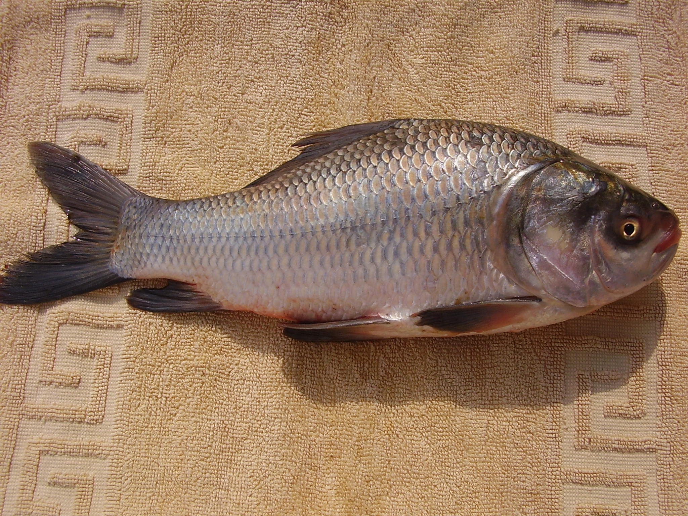
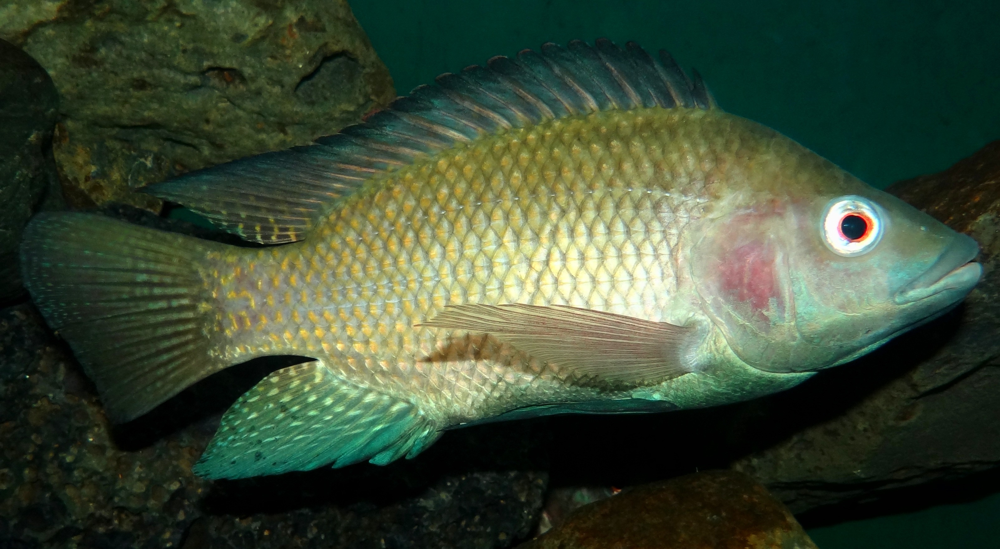

Varanasi known as Banaras is a city situated on the banks of the River Ganges in Uttar Pradesh. Ganga Ghats are main attraction of the holy city Varanasi. Ghats of Ganga are perhaps the holiest spots of Varanasi. It has numbers of Ghats more than 100 ghats along side Ganga. The city is considered sacred by Hindus, Buddhists and Jains. Most of the ghats are bathing ghats, while others are used as cremation sites. Many ghats are associated with legends or mythologies while many ghats are privately owned. The former Kashi Naresh owns Shivala or Kali ghat. Morning boat ride on the Ganges across the ghats is a popular visitor's attraction.
AQUA CULTURE
• the cultivation of aquatic organisms.
• aquaculture also known as aquafarming, implies the cultivation of aquatic populations under controlled conditions.
• Mariculture refers to aquaculture practiced in marine environments
• Particular kinds of aquaculture include agriculture (the production of kelp, seaweed, and other algae), fish farming,
shrimp farming, shellfish farming, and growing of cultured pearls..
Aquaculture is relatively new, promising and upcoming sector in the Uttar Pradesh To promote the fishery industry in U.P. the government has been trying to focus on some of the issues such as development of technologies and ensuring availability of fingerlings of local species, creation of infrastructural framework for aquaculture mitigating institutional and investment constraints, providing incentives in the form of subsidy ranging from 20-50% and mapping out suitable sites etc Furthermore, the extreme climatic conditions are a challenge in the region and restricts the economic productivity of inland aquaculture systems.

The Department has started various innovative schemes to support small fish farmers by preparing the facilities of hatcheries, nurseries, feed mills, models ponds, integrated demonstration units and mobile outlets for value added products. The new fisheries projects are expected to yield 13 769 lac ton of fish production from aquaculture and 4 116 lac ton from open water fish production by 2023."
Various Programs of Uttar Pradesh Government are:• Mobile Fish Parlor
• Fisherman's Housing
• Fisheries Development Agency
An Overview
Fishing is the activity of trying to catch fish. Fish are often caught in the wild but may also be caught from stocked bodies of water. Techniques for catching fish include hand gathering, spearing, netting, angling and trapping. "Fishing" may include catching aquatic animals other than fish, such as molluscs, crustaceans, and echinoderms (such as starfish and sea urchins). The term is not normally applied to catching farmed fish, or to aquatic mammals, such as whales where the term whaling is more appropriate. In addition to being caught to be eaten, fish are caught as recreational pastimes. Fishing tournaments are held, and caught fish are sometimes kept as preserved or living trophies. When bioblitzes occur, fish are typically caught, identified, and then released
| What we can Catch? | |||
| Fish Name | Description | Tips | Picture |
|---|---|---|---|
| Rohu | The rohu is a large, silver-colored fish of typical cyprinid shape, with a conspicuously arched head. Adults can reach a maximum weight of 45kg (99 lb) and maximum length of 2 m (6.6 ft),[2] but average around 1⁄2 m (1.6 ft). | The spawning season of rohu generally coincides with the southwest monsoon. The rohu occurs in rivers throughout much of northern and central and eastern India | |
| Salmon | Chinook/King salmon are the largest salmon and get up to 58 inches (1.5 meters) long and 126 pounds (57.2 kg). Pink salmon are the smallest at up to 30 inches (0.8 meters) long and 12 pounds (5.4 kg), although they average 3 to 5 pounds (1.3-2.3 kg). | Salmon are attracted to bright colors, so use lures and bait that will catch the attention of the fish and make them want to bite. Master anglers recommend red, blue, fluorescent pink and fluorescent orange as colors that will most often attract salmon. | |
| Catla | Catla is a fish with large and broad head, a large protruding lower jaw, and upturned mouth. It has large, greyish scales on its dorsal side and whitish on its belly. It reaches up to 182 cm (6.0 ft) in length and 38.6 kg (85 lb) in weight | Expert anglers recommend fishing for catla early in the morning, dusk, or evening hours. It's true, you can catch catla at any time of day, but catla are generally more active during these times |  |
| Basa | The body of the basa is stout and heavy. The rounded head is broader than it is long, with the blunt snout having a white band on its muzzle. This species grows to a maximum length of 120 centimetres (47 in). | When your plastic worms get torn up, save ’em. Basa like to ambush wounded prey, so a beat-up worm is perfect to use, especially in shallow water. | |
| Pomfret | The family currently includes 20 species across seven genera.Several species are important food sources for humans, especially Brama brama in South Asia. The earlier form of the pomfret's name was "pamflet",a word which probably ultimately comes from Portuguese pampo,referring to various fish such as the blue butterfish. The fish meat is white in color. | In shallow cover—wood, stumps, clumps of grass—I like to use a spinner bait with a red or pink head,and a crank bait with red hooks. The red makes the fish think the bait’s injured, and they’ll bite at it. | |
| Tilapia | Their mouths are protrusible, usually bordered with wide and often swollen lips. The jaws have conical teeth,tilapia have a long dorsal fin, and a lateral line that often breaks towards the end of the dorsal fin. Some tilapia can grow as long as 2.0 ft. | When you cast, stop halfway instead of following through, similar to a check swing in baseball. This makes the lure hit the surface of the water a few feet before your target, so the lure skitters over the water. It’s a good way to get under docks and other structures. |  |
| Mrigal Carp | The mrigal carp also known as the white carp, is a species of ray-finned fish in the carp family.It reaches a maximum length of 1 m (3.3 ft).[3] This species and Cirrhinus mrigala are considered distinct. | I use a file to sharpen my hooks every time I catch a fish and before every trip. Sacrifice some distance in your casts and fish with the wind in your face. | |
| Mystus | Mystus is a genus of fish in the family Bagridae native to Asia.[1] Phylogenetic relationships within this genus are poorly understood, though it has been suggested that there are two major lineages | You have to keep tapping at it to upset it into biting your hook. Bass position themselves in cover, and like the lure presented to them at different angles. I’ve tossed lures a hundred times onto the same location until finally getting a bite. | |